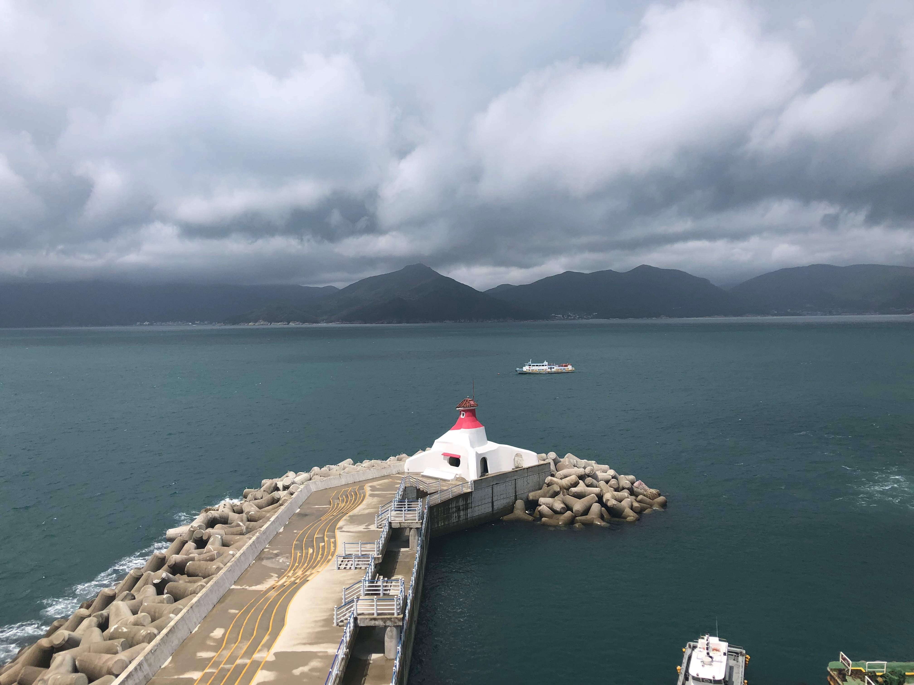
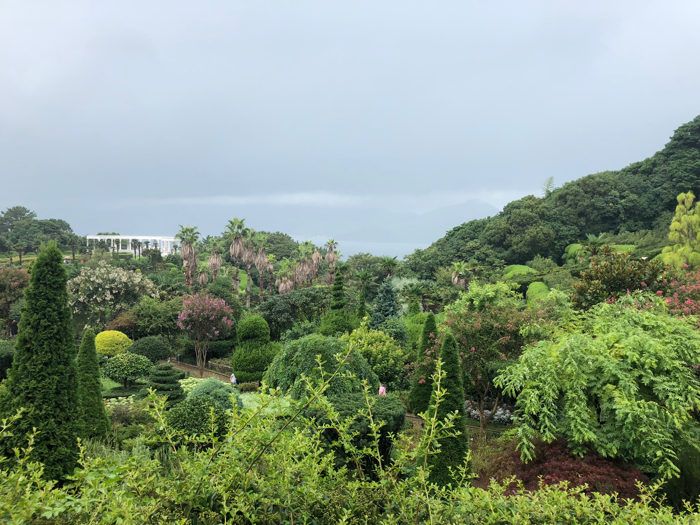
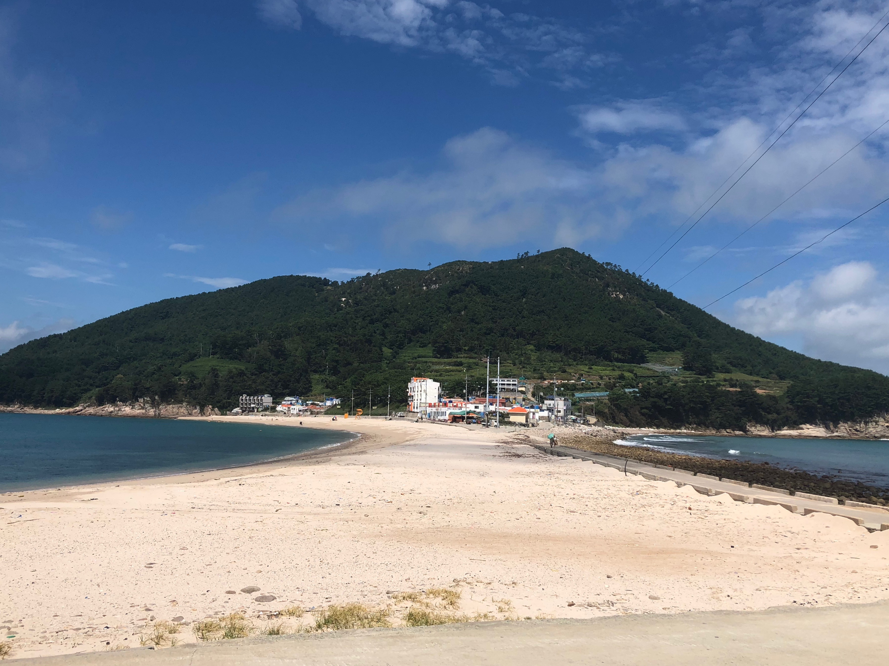
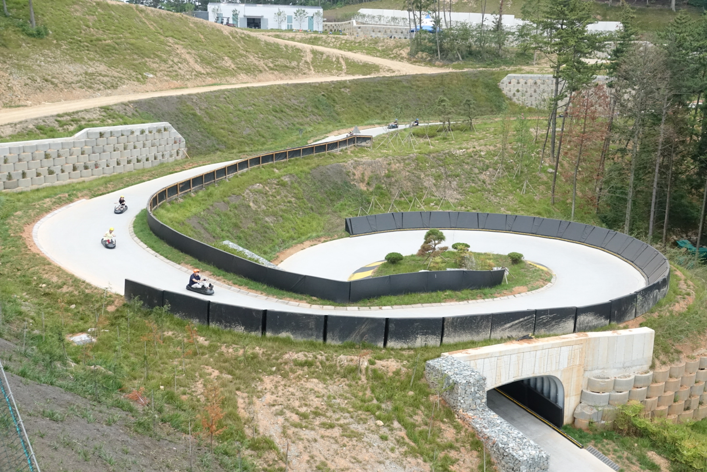

제주도
소개
관광지
번외추천!
거제/통영
소개
관광지
번외추천!
거제/통영 소개

거제 - 우리나라에서 제주도 다음으로 큰 섬
통영 - 경상남도 남단에 위치해 있으며 동쪽은 거제시, 서쪽은 남해군, 북쪽은 고성군, 남쪽은 남해와 접하고 있다.
관광지 1

외도보타니아
개인이 30년에 걸쳐서 섬전체를 이국적인 정원으로 가꿔서 보존
사계절 내내 푸르름을 감상할 수 있는 곳
http://www.oedobotania.com/guide/ 참고
관광지 2

통영비진도
통영항에서 배로 한 시간 거리에 있음.
두 개의 섬이 하나처럼 모래사장과 돌들로 이어져서 위에서 보면 최고 멋진 풍경을 볼수있다.
비진도는 내항(마을) 외항으로 나눠져있다.
번외추천!

스카이라인루지 통영
세계에서 6번째로 개장
통영시에서 루지를 기획하면서 "하늘에서는 케이블카, 땅에서는 루지"라는 슬로건을 내놓음
남해를 보면서 즐길 수 있는 어른, 아이 모두 즐길 수 있는 루지